Seq2Seq模型
定义
包括两个部分：
- 编码器：将一个变长、可变类型的输入序列编码成一个固定长度、定长的向量，该向量中包含了输入序列的所有信息
- 解码器：每次输出一个字符，并把该字符作为下一次的输入，以此往复直到输出序列的结束标志为止
起始/终止符
以机器翻译为例，英翻中：
- target input：加
[CLS]表示句子的开始 - target output：加
[SEP]表示结束
在==训练==时，用正确的target input（即ground truth）做输入，然后求loss进行参数更新，称为Teacher Forcing
在==推理==时，[CLS]做输入，每次输出一个字符，并把该字符作为下一次的输入，直至预测到[SEP]
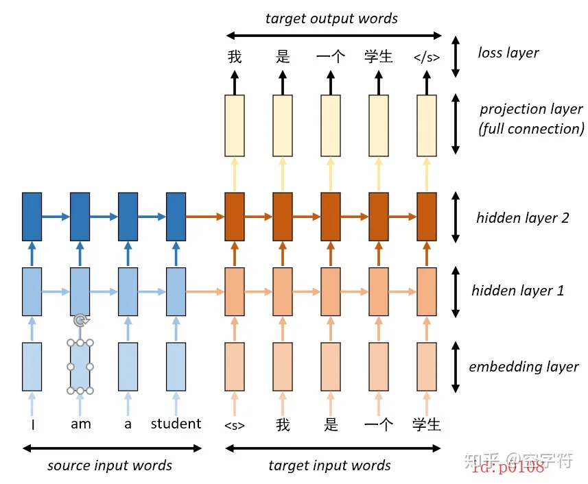
如下图所示，输入的信息累积到$h_m$中，作为隐藏状态传给Decoder
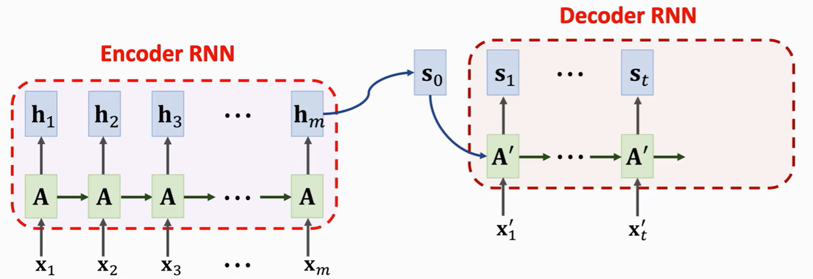Attention
传统的Seq2Seq模型的Decoder部分，在生成下一状态时，只用到当前状态。而使用==attention==之后，Decoder每生成一个状态，都会重新计算和Encoder之间的相关性。
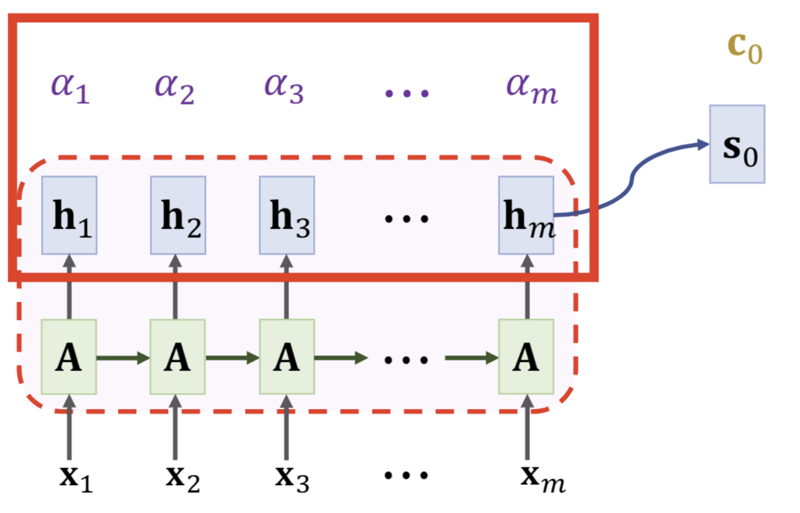计算$a_i$的公式如下。其中，$W_K$和$W_Q$是训练中得到的，$A$为参数矩阵，$k_i$、$q_i$均为列向量 $$ \begin{array}l fk_i=fW_K \cdot fh_i, \text { for } i=1 \text { to } m \\ fq_0=fW_Q \cdot fs_0\\ fK=\left \{ k_1,k_2,…,k_m \right \} \\ \tilde{\alpha}_i=fK^T fq_0 \\ \left[\alpha_1, \cdots, \alpha_m\right]=\operatorname{Softmax}\left(\left[\tilde{\alpha}_1, \cdots, \tilde{\alpha}_m\right]\right) \end{array} $$
计算得到$a_i$之后，计算$s_0$对应的$c_0$，并计算下一个状态$s_1$
==注==：这里相比于RNN，attention在计算中多考虑了$c_0$ $$ fv_i=fW_V\cdot fh_i\\ fc_0=\alpha_1 fv_1+\cdots+\alpha_m fv_m\\ fs_1=\tanh \left(fA^{\prime} \cdot\left[\begin{array}l fx_1^{\prime} \\ fs_0 \\ fc_0 \end{array}\right]+fb\right) $$ 得到$s_1$之后，重新计算$a_i$，$k_i$不变，其他重新计算，得到$s_2$，以此类推
Self-Attention
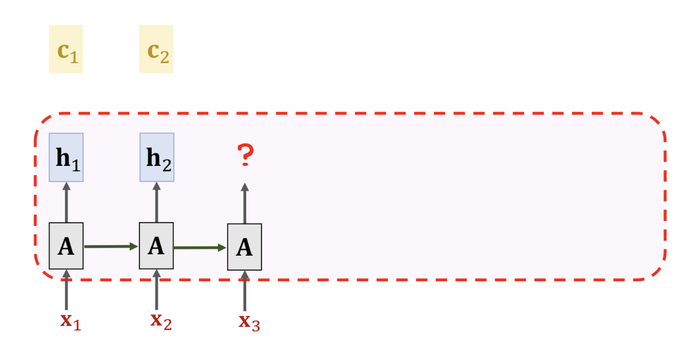隐藏变量$h_i$的计算公式如下
$$
fh_i=\tanh \left(fA \cdot\left[\begin{array}l
fx_i \\
fc_{i-1}
\end{array}\right]+fb\right)
$$
要得到$c_i$，首先要计算attention系数$a_i$，通过下列公式得到，其中align表示相关性公式
$$
a_i=align \{h_i, (h_0,h_1,…h_i) \}
$$
接着，计算得到$c_i$，并更新隐藏变量$h_i$
$$
fc_l=\left\{\begin{matrix}
h_1,\qquad l=1 \\\
\sum_{i=1}^l{a_i}{h_i} , l>1
\end{matrix}\right.
$$
Transformer模型
Attention
和Seq2Seq模型类似，我们首先定义一个attention层，$k_:1$中的冒号表示其是一个列向量
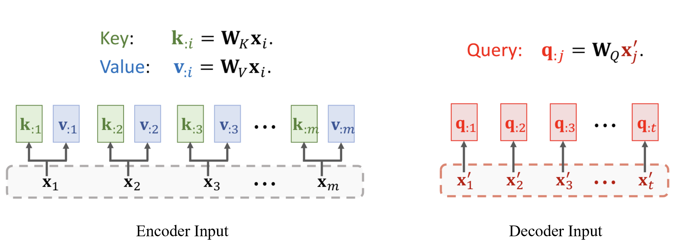输入序列有两个，分别是Encoder Input和Decoder Input。接着，通过公式计算$a_:1$
$$
\boldsymbol{\alpha}_{: 1}=\operatorname{Softmax}\left(fK^T fq_{: 1}\right) \in bR^m
$$
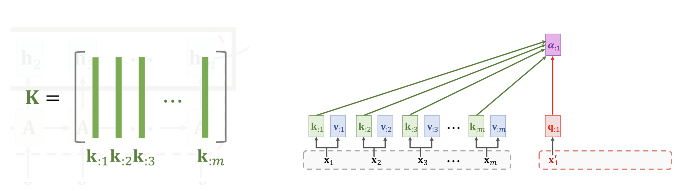
最后，计算得到$c_:1$。其中，$a_{11}$表示列向量$a_:1$的第一个元素 $$ fc_{: 1}=\alpha_{11} fv_{: 1}+\cdots+\alpha_{m 1} fv_{: m}=fV \boldsymbol{\alpha}_{: 1} $$
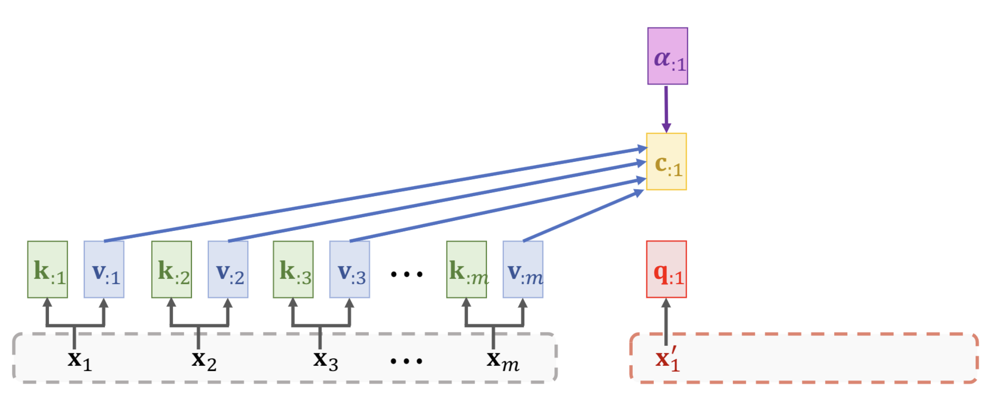综上，attention层的参数如下
- 输入：包括
Encoder Input和Decoder Input，$fC=Attn（fX,f{X’}）$ - 输出：$fC=\left[fc_{:1}, fc_{:2}, \cdots, fc_{:t}\right]$
Self-Attention
与Attention层类似，不同的是只有一个输入
- 输入：$fC=Attn（fX,fX）$，可以看作两个输入都是X的Attention
- 输出：$fC=\left[fc_{:1}, fc_{:2}, \cdots, fc_{:t}\right]$
Multi-Head
使用多头注意力，模型可以学习到不同的注意力权重，从而从不同的角度和视角来关注输入序列的信息
以Multi-Head Self-Attention为例
Multi-Head Self-Attention由L个Single-Head Self-Attention组成，即有L个$W_K、W_Q、W_V$矩阵
最终得到L个$c_{:i}$，将其concat在一起
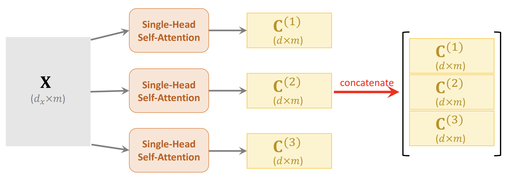搭建Encoder
单个Block由一个多头Self-Attention和全连接层组成，由于输入和输出的维度一样，可以采用残差结构
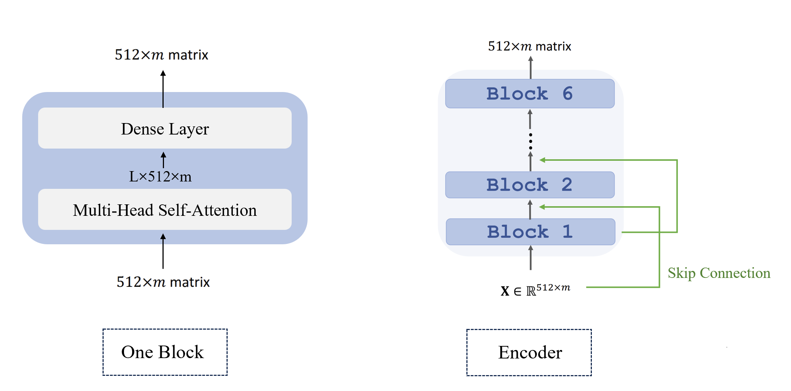搭建Decoder
单个的Decoder Block如下图所示
==注==：对输入的$X’$，一般做的是Multi-Head Masked Self-Attention。即预测第i个单词不能获得i+1个单词的信息。因此Decoder部分被称为单向Transformer
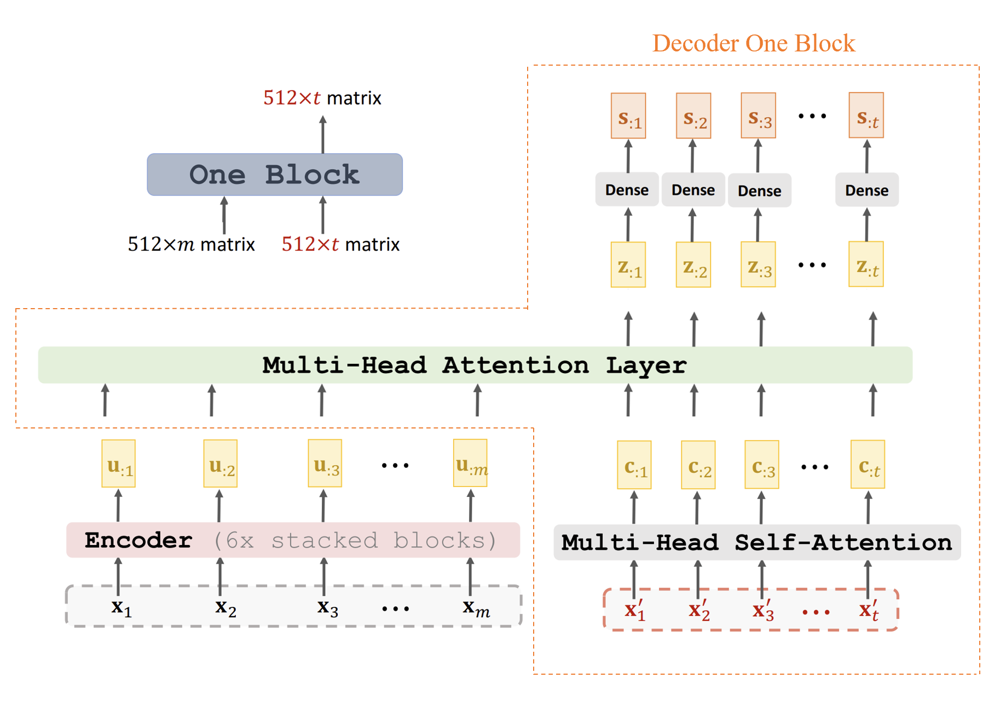最后，将Encoder和Decoder组合起来，得到下图的结构
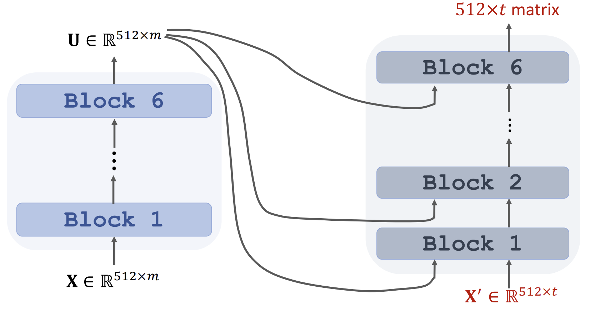参考资料：